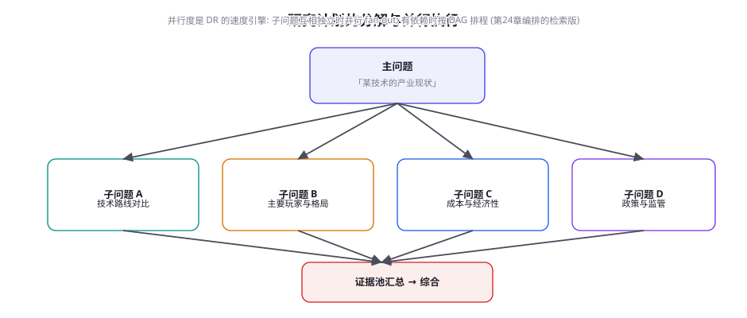

Deep Research：深度研究 Agent 架构解密
前沿篇开章：把前面所有能力拧成一个旗舰场景。Deep Research（OpenAI/Google/Anthropic 在 2024-2025 年密集推出的深度研究产品）是「多步检索 + 综合 + 引用」的集大成者——GAIA 与 BrowseComp 的双料标杆（第 53 章）。本章解密它的五阶段循环、子问题并行、引用工程，并给出「自建研究 Agent」的架构蓝图。
五阶段循环：从问题到报告

五阶段的工程要点：① 计划（Planner）——研究问题分解为子问题树（图 73-2）——分解的质量决定全局（「子问题互相正交」避免重复检索、「覆盖主问题的信息空间」避免漏面——计划器的提示要包含「分解自检清单」）；② 并行检索（Searcher）——多路搜索工具的组合（搜索 API + 浏览器深潜 + 数据库查询——BrowseComp 式「检索续航」的并发化——子问题独立时 fan-out 并行，有依赖时按 DAG 排程——第 24 章编排的检索版）；③ 综合（Synthesizer）——证据聚合 + 矛盾标注（「阵营 A 与 B 的分歧」——第 71 章「矛盾优先」综述纪律的继承）；④ 引用核对（Verifier）——主张-来源对齐流水线（第 63 章的全量启用——DR 场景是「锚点法 + 核对流水线」价值最大化的地方：报告的可信度就是它的商品）；⑤ 交付（Reporter）——结构化报告 + 引用列表 + 置信标注（「已核实/单源/无据」三级标注随报告交付——第 63 章分级标注的旗舰应用）。迭代回路（回计划）是 DR 与「一次成文 RAG」的本质分野：检索结果暴露「子问题分解遗漏了面」（发现了新的关键线索）→ 回到计划重分解——2~5 轮迭代是常态——「迭代次数」本身是 DR 的资源旋钮（第 78 章成本账本的核心变量）。
三家方案对比与共性解密
| 方案 | 执行形态 | 耗时量级 | 特色 | 对自建的启示 |
|---|---|---|---|---|
| OpenAI Deep Research（o3 驱动） | 端到端推理模型 + 内置浏览 | 5~30 分钟 | 推理模型的长链规划 | 「推理模型的计划力」是质量上限 |
| Google Gemini Deep Research | 计划确认制（用户可改计划） | 5~20 分钟 | 「计划可编辑」的协作形态 | 人审计划是性价比最高的人工介入点 |
| Anthropic Research（Claude） | 多 Agent 编排（子 Agent 检索） | 10~40 分钟 | 多 Agent fan-out + 引用严格 | 编排架构（第 24/28 章）的旗舰示范 |
对比表的三个深层观察：① 「计划确认制」的协作价值——Gemini 让用户在检索前确认/修改计划——计划的人工成本是 1 分钟，回报是「整场研究方向对齐」——第 73 章反复出现的「人工介入点」设计在这里的最优解：介入在计划，不在过程（过程干预会破坏并行性，计划干预成本最低收益最大）；② 多 Agent 编排的「引用严格性」红利——Anthropic 的子 Agent 各管一个子问题、自带引用——「引用随子任务走」让「主张-来源」的对齐在生成时就完成（核对从「事后」变成「伴随」——第 55 章「引用随内容走」原则的架构化）；③ 推理模型的「规划力」决定上限——OpenAI 用推理模型做计划——子问题分解的深度（「想到要查什么」）是 DR 质量的天花板，而这是推理模型的长项——「DR 的竞争 = 推理能力 × 检索基建 × 引用工程」的三元乘积。
自建研究 Agent 的架构蓝图

自建 DR 的组件清单（按重要度排序，多数组件是前文已有的拼图）：① 计划器——推理模型 + 分解自检清单（正交性/覆盖度/可验证性三查）；② 检索工具箱——搜索 API（快速面）+ 浏览器 Agent（深度面——第 67 章的 WebVoyager 直接复用）+ 垂直数据源（专业数据库 API——科学域的 PubMed/PubChem、金融域的行情库——「领域源」是自建 DR 对通用产品的差异化优势）；③ 证据管理器——检索结果的统一表示（来源/时间戳/可信度/摘录——第 61 章来源标记的检索版）与去重（跨子问题的重复证据合并——第 47 章去重的检索版）；④ 综合器与核对器——第 63 章流水线全量复用；⑤ 报告生成器——结构模板 + 置信标注 + 「局限声明」（研究没查到的面要诚实说——第 63 章「无据」标注的报告级形态）。自建 vs 采购的决策：通用研究需求直接用商业 DR（三家已经很强——自建通用版是重复造轮）；「领域源 + 领域判据」的研究需求自建（商业 DR 摸不到你的内部数据与专业判据——垂直 DR 的护城河在领域资产——这与第 44 章「工具训练的领域化」是同一个逻辑）。
研究报告的商业价值链里有一个反直觉的环节：用户付费的不是「信息」（信息免费），而是「信息被核实过」这个状态——DR 的本质商品是「经过验证的综合判断」——引用核对因此不是「质检环节」而是「价值生产环节」。由此推出三条产品级推论：① 「无据主张」的可视化是特性不是缺陷——报告里「此点为单一来源/推测」的标注密度，恰恰是产品诚实的证据（全部「已核实」的报告反而可疑——第 63 章分级标注的产品价值在 DR 场景最大化）；② 「局限声明」是信任的放大器——「本研究未覆盖 XX 面（原因）」的诚实让已覆盖部分更可信——透明度与可信度的正相关在 DR 场景最强；③ 核对的「抽查式披露」——报告附「引用核对方法说明」（抽检比例、核对方式）——让用户知道「可信是怎么来的」——「可审计性即卖点」（第 65 章「尽职法律化」的商业版）。给自建 DR 团队的优先级指令：引用核对工程的投资优先级高于检索广度——「查得多但核得松」的报告在市场上一文不值（一次错误引用的信任损失 > 十次覆盖不足）。
用「五阶段骨架」自建一个迷你 DR 并做一次「同题对打」：挑一个你业务的研究问题，先让商业 DR 产一份报告；然后按本章蓝图搭迷你版（计划器+搜索 API+第 63 章核对，一天可成）产另一份。双盲对照三件事：覆盖面（各自的子问题树比对——商业版的分解有没有你想不到的面？）、引用存活率（两边各抽 20 条引用点开验证——商业版的引用幻觉率可能让你意外）、矛盾处理（对有争议的点，谁标注了分歧、谁平滑掉了？）。对打的结果会精确告诉你「商业 DR 对你的任务差在哪」——那就是你的垂直 DR 的立项依据（如果差距在领域源与判据，自建；如果差距在基础能力，等待与采购）。
「迷你 DR」的骨架代码给出（本页实验的地基——五阶段的可执行最小版）：
def mini_deep_research(question: str, rounds: int = 2) -> Report:
evidence_pool = EvidencePool()
for round_no in range(rounds):
# ① 计划: 分解 + 自检 (首轮分解主问题, 后轮补遗漏面)
subqs = planner.decompose(
question,
already_covered=evidence_pool.subq_covered(),
checklist=["正交性", "覆盖度", "可验证性"])
# ② 并行检索: 独立子问题 fan-out
results = parallel_map(
lambda sq: search_tools.run(sq), # API+浏览器混合
subqs, max_workers=4)
for sq, docs in results:
# ③ 证据入池: 来源/时间/可信度/摘录 结构化
for doc in docs:
evidence_pool.add(doc, source_tag=sq,
trust=source_trust(doc.url))
# 迭代判定: 证据是否足以综合? (不足则回计划)
if evidence_pool.covers(question) and round_no > 0:
break
# ④ 综合与核对: 矛盾优先 + 主张-来源对齐 (第63章全量)
draft = synthesizer.write(question, evidence_pool,
rules=["矛盾必须披露",
"相关性证据不得支持因果主张"])
claims = extract_claims(draft)
verified = citation_pipeline.verify(claims, evidence_pool)
# ⑤ 交付: 分级标注 + 局限声明
return reporter.render(draft, verified,
limitations=evidence_pool.gaps())骨架里的四个「前文回收点」标注了本书方法的复用：parallel_map 的 DAG 化是第 24 章编排、source_trust 是第 61 章来源标记、covers() 的覆盖判定是第 50 章覆盖度审计、verify 是第 63 章核对流水线——迷你 DR 的全部新代码只有一个函数：planner.decompose——这印证了本章的判断：DR 是「集成创新」而非「组件创新」——难点不在写新代码，在把旧组件的质量调到「互相不拖后腿」。三个质量调校点：分解的自检清单提示要迭代（第 64 章 Spec 方式管理）、证据池的「覆盖判定」阈值要校准（过松提前交付、过紧烧预算）、综合器的两条硬规则要进 system prompt 而非事后检查。
「计划确认制」的交互设计给一个可抄的协议（Gemini 形态的自建版），它把「人工介入在计划」落成产品细节：
research_plan:
understanding: | # ① 问题理解复述 (对齐检查)
您想了解 X 技术在制造业的落地现状, 重点是成本与替代方案。
subquestions: # ② 子问题树 (可增删改)
- "主流技术路线及各自成熟度" [预计 8 个检索]
- "代表厂商、产品与定价" [预计 10 个检索]
- "实际落地案例与 ROI 数据" [预计 12 个检索]
- "已知风险与替代技术" [预计 6 个检索]
excluded: ["消费级应用场景"] # ③ 明确排除面 (边界透明)
sources_strategy: # ④ 源策略 (可信度预告)
priority: [行业报告, 官方文档, 厂商白皮书]
cross_check: "关键数字需 ≥2 独立来源"
budget: "约 36 个检索, 预计 15 分钟" # ⑤ 资源预告
edit_hint: "可回复: 修改/删除/增加子问题, 或调整排除面"协议的五个字段让「确认计划」这个动作在 60 秒内可完成（读理解 → 扫子问题 → 看排除面 → 点确认）——而这一分钟的回报是「整场研究方向对齐」（方向错误的检索全部白费——计划确认的 ROI 是本章所有人工介入点里最高的）。第五字段的「资源预告」还有一个隐藏价值：它把「研究深度」变成了用户的显式选择（预算可见 → 深度可调——第 78 章成本旋钮的用户侧界面）。协议的完整版还应包含「迭代预告」（预计几轮回路、什么情况会回来加问题）——预期管理是协作体验的一部分。
「证据管理器」的数据结构值得单独给出，因为它是五组件里最容易被草率处理（一个 List 装完）而后果最重的——证据池的质量直接决定综合与核对的上限：
@dataclass
class Evidence:
id: str # 证据 ID (引用列表的键)
source_url: str
source_type: str # api | webpage | database | pdf
trust: float # 来源可信度 (域名分级 + 交叉验证数)
published_at: str # 时间戳 (时效错配防线的数据)
excerpt: str # 摘录 (主张对齐的最小单元)
subq_id: str # 归属子问题 (覆盖审计的统计键)
corroborations: int # 交叉验证计数 (独立来源确认数)
class EvidencePool:
def add(self, doc, source_tag, trust):
ev = Evidence(**doc, subq_id=source_tag, trust=trust)
# ① 去重: 同 URL / 高相似摘录 → 合并而非新增
if dup := self.find_duplicate(ev):
dup.corroborations += 1 # 交叉验证计数 +1
return
# ② 冲突标记: 与已有证据矛盾 → 双向挂标 (综合器必读)
if conflict := self.find_conflict(ev):
self.conflicts.append((conflict.id, ev.id))
self.items.append(ev)
def trust_weighted(self, claim_scope) -> list:
"""给综合器的证据流: 按可信度加权排序,
单源低信证据降权但保留 (透明而非隐藏)。"""
return sorted(self.items, key=lambda e:
(e.trust * (1 + e.corroborations), -e.age()))结构里的三个设计意图对应本章三防线：corroborations 字段服务「选择性引用」防线（交叉验证计数让综合器看见「哪些主张有独立来源」）；published_at 服务「时效错配」防线（证据时间分布图的数据源）；conflicts 挂标服务「矛盾披露」纪律（冲突证据在综合前就被显式标记，综合器无法「平滑掉」它们）。证据池是 DR 的「地基工件」——综合器的所有诚实都建立在证据结构化的完备上；「结构化不足的证据池」会让后面每一段管线都在垃圾上盖楼。
「多源检索的分工矩阵」值得单独成段，因为不同检索通道的成本、速度与信息密度差异悬殊：① 通用搜索引擎 API（Google/Bing/Tavily）——成本最低、响应毫秒级，适合子问题树的初轮发散（广度优先）；② 垂直领域数据库（PubMed、arXiv、SEC EDGAR、行业财报库）——结构化强、权威度高，适合提取具体指标与硬事实（精度优先）；③ 浏览器深度抓取（Playwright/无头浏览器，第 67 章）——成本最高、耗时数秒到数十秒，但能穿透动态渲染页面、下载并解析 PDF 研报——只在「通用 API 检索到的关键高价值链接」上定向触发（第 66 章裁剪聚焦思想在检索域的复现：搜索 API 扫全局，浏览器抓取细看 ROI）。矩阵的调度逻辑由计划器自动标注：每个子问题除关键词外，带推荐检索通道标签（preferred_channel: api|db|deep_browser）——混合调度让一次 30 步的研究任务在 10 分钟内完成，且总成本控制在预算线内。
关于「证据冲突的仲裁与置信衰减」的算法细节：当两个独立来源对同一个事实给出矛盾数据时（例如机构 A 预测某市场规模 500 亿，机构 B 预测 800 亿），综合器切忌「取平均值」这种平庸妥协。严谨的 DR 仲裁逻辑分为三步：① 出版时间与测算口径对齐——核验两份报告的统计年份与定义范围（机构 A 是否仅包含硬件，机构 B 包含了衍生服务？）；② 权威度加权——原始官方统计数据 > 顶尖投行深度研报 > 行业媒体新闻稿；③ 冲突显式化展示——在最终报告中以表格或专门的「争议分析」段落呈现两方视角及其各自的前提假设，并对结论的置信度做阶梯式衰减（confidence: medium (due to conflicting primary sources)）。这一机制彻底消除了传统 LLM「顺风就自洽、逆风就胡编」的顽疾，让报告具备经得起尽职调查推敲的学术严肃性。
关于「自建系统中的防御反爬与合规抓取」：在实际构建生产级 Deep Research 时，网络抓取层必须严格遵守工程与法律伦理。针对反爬防护密集的优质源，推荐采用无头浏览器与代理池分级策略：优先消费公开开放的 REST API 与 RSS 源；次优采用静态 HTML 解析器（如 Beautiful Soup、Cheerio）；最后且仅在关键源上调度带真实渲染与行为模拟的 Playwright 实例（第 67 章）。同时，必须设置硬性的并发上限与单域名延迟间隔（例如限制同域请求不超过 1 QPS），并在 HTTP Header 中明确标注研究机器人的 User-Agent 与联络邮箱。遵守 robots.txt 与站方服务条款不仅是防范法律风险的底线（第 65 章合规要求），也是确保研究系统长期可持续运营的技术契约。
补足一个实用的落地建议：领域模板库与提示词版本的持续解耦。深度研究系统在面对「行业尽职调查」、「竞品功能矩阵对比」、「临床试验数据追踪」等不同专业场景时，其子问题树的分解风格高度特异。工程上应建立结构化的研究模板库（YAML 格式定义每个业务域的默认分解框架、优先信息源集与必查风险维度），使得业务分析师无需懂得 Agent 编排细节，仅通过选择模板并输入核心实体（如目标公司名或候选药物名），即可启动工业级水准的深度调研。模板本身的增删改查应独立于底层 Agent 执行引擎，走与代码相同的版本受控与回归测试通道（第 56 章）。
三个高频疑问
Q：DR 会不会「看起来很全但其实漏了关键面」？怎么审计覆盖度？覆盖度审计是 DR 的最难评测面（第 53 章「未测能力」清单的 DR 版），三个可操作的方法：① 「金标准面清单」对照——领域专家先列「这个问题应该覆盖的面」（人 10 分钟的清单）——报告回填「每面的证据数」——零证据的面就是洞（「专家锚点法」——第 53 章人类基线的 DR 版）；② 「反面问题」探测——「报告没说什么」的检查：让另一个模型读报告后回答「基于此报告，哪些问题我仍然无法回答」（盲区探测——被点名的盲区回查是不是真盲）；③ 迭代轮次与覆盖度的关系监控——只跑 1 轮的 DR 与跑 3 轮的覆盖差异（迭代是覆盖的引擎——「轮次预算」的削减直接反映在盲区数上）。三方法的组合定位：金标准面清单做「绝对覆盖」（vs 理想）、反面探测做「报告内一致性」、轮次监控做「过程合理性」——覆盖度审计是「让 DR 从黑盒变成可审计产品」的关键一步——这也是垂直 DR 对商业 DR 的结构性优势点（你可以审计自己的，审计不了别人的）。
Q：DR 的成本很高（一次研究数美元到数十美元），什么任务配得上？用「决策价值 × 信息半衰期」的二维判断：决策价值高（采购决策、投资尽调、技术选型——错一次的代价 > 研究成本百倍）×信息半衰期中长（研究的结论能用月——值得 DR；半衰期以天计的用轻量检索）；反过来「决策轻 + 半衰期短」的组合用普通 RAG（一次检索即答）。中间地带的「渐进研究」形态（先 1 轮 DR → 用户判断够不够 → 不够再加深）比「全或无」的双档更经济——「研究深度」的可调节性是自建 DR 对固定档商业产品的另一个架构优势（第 78 章成本经济学的「质量-成本旋钮」在 DR 场景的实例）。给预算管理者的估算锚点：商业 DR 单次 $2~20、垂直自建（含基建摊销）类似量级——用「省下的专家小时数」计价（1 小时分析师 $50~200），DR 的 ROI 在「每周 ≥5 次高频研究需求」的团队立即为正。
Q：DR 的「研究幻觉」（看起来严谨但整体性错误）怎么防？这是第 63 章「单点幻觉已治、系统性幻觉待防」的 DR 版——「每个引用都对，但综合结论歪了」的三种形态与防线：① 选择性引用（只引支持某结论的证据——检索偏置的系统性后果）——防线：计划的「正交性」自检 + 报告的「反方证据强制披露」（每个主结论必须附「对立证据/局限」——第 71 章「矛盾优先」的报告级强制）；② 归因跳跃（相关性证据被综合成因果结论）——防线：主张的「证据强度分级」（相关/因果/机制三级标注——第 63 章分级标注的科研化）+ 综合器的提示约束（「相关性证据不得支持因果主张」的硬规则）；③ 时效错配（新旧数据的混合平均造成「时代杂音」）——防线：证据的时间戳显式化（报告附「证据时间分布图」——半衰期敏感的领域（技术/市场）必备）。三形态的通防是同一件武器：「综合层的透明化」——报告不仅要给结论，还要给「结论是怎么合成的」（证据图谱的可见性）——这是 DR 相对人类分析师的潜在优势：机器的综合过程可以完全留痕，人类的综合过程是黑盒——把这个优势做成产品特性，DR 的可信度叙事就完整了。
本章在全书网络中的连接：上游是第 53 章（GAIA/BrowseComp——DR 的标尺）、第 63 章（引用核对——DR 的商品核心）、第 67 章（浏览器 Agent——深度检索的执行层）、第 24/28 章（编排——多 Agent fan-out）；横向开启第 8 部分（73-80 章的旗舰场景系列）；下游通向第 71 章（科学发现——DR 的科研特化）、第 74 章（Coding Agent——同源的「深度执行」场景）、第 78 章（成本——DR 是「质量-成本旋钮」的最大变量场景）。复习锚点：五阶段循环图（73-1）、三家对比表（73-1 表）、自建蓝图五组件、可信度经济学三推论、覆盖度审计三方法、研究幻觉三形态。
本章收尾，把 Deep Research 的本质做一次哲学层面的升华：DR 不是更大号的搜索引擎，而是人类研究工作流的认知外包原型。它把「提出假说 → 分面求证 → 交叉核对 → 结构化交付」这一整套分析师受训多年的思维肌肉变成了可自动化的计算图。但正因如此，研究者的角色没有被消灭，而是被推向了价值更高的位置：审视计划树是否切中要害、在关键矛盾点行使定夺权、以及为最终结论赋予商业或学术的意义。下一章我们将转向另一个由大模型掀起风暴的深度执行领域——Coding Agent：从单行补全的 Copilot，到自主修 bug 的 Devin 与 Claude Code，看代码世界的软件工程规律如何重塑智能体架构。
最后补齐「长程研究中的上下文折叠与工作记忆管理」（与第 76 章深度呼应）：一次典型的 DR 任务会抓取数十万甚至数百万 token 的原始网页和研报，没有任何商用模型的单次窗口能装下且保持注意力不溃散。自建系统必须引入两级工作记忆架构：工作内存（Scratchpad）存放当前正在求证的子问题、已提取的原子证据清单与未决疑问；归档内存（Store）则存放已被提炼且标注来源的结构化事实卡片。每当一个子问题的并行检索完成，立即触发「局部压缩算子」——把原始长网页浓缩为 3-5 条带精确出处的摘要事实，再清空上下文载入下一个子问题。这种「流水线吞吐、工作记忆恒定」的工程设计，是使 Deep Research 能够稳定运行数小时且成本不会随时间指数膨胀的秘密武器。
本章小结
- 五阶段循环（计划/并行检索/综合/引用核对/交付）+ 迭代回路——多轮迭代、子问题并行、核对内建是与 RAG 的三大分野。
- 三家共性解密：内核同构；人工介入的最优点在「计划」（成本最低、方向收益最大）；引用随子任务走是架构化优势。
- 自建蓝图五组件中「领域源 + 领域判据」是垂直 DR 的护城河；通用需求采购、垂直需求自建。
- 可信度经济学：DR 的商品是「被核实的信息」——核对是价值生产不是质检；无据标注与局限声明是信任放大器。
- 覆盖度审计三方法：金标准面清单、反面问题探测、轮次-覆盖监控——让 DR 从黑盒变可审计。
- 研究幻觉三形态（选择性引用/归因跳跃/时效错配）的通防：综合层透明化——证据图谱可见。
自测题
- 跑「同题对打」实验：商业 DR 与你的迷你版各差在哪？差距落在「领域资产」还是「基础能力」？
- 为你业务的第一个 DR 场景写「金标准面清单」：10 分钟你列了几个面？哪个面最常被通用产品漏掉？
- 用「决策价值 × 信息半衰期」给你的全部研究需求分类：哪些配 DR、哪些用 RAG、哪些该渐进？
- 设计你的 DR 报告模板：证据强度分级、矛盾披露、局限声明的字段怎么放？
参考文献与延伸阅读
- OpenAI (2025). Introducing Deep Research. openai.com
- Google (2024). Gemini Deep Research. gemini.google
- Anthropic (2025). Multi-Agent Research System 工程博客. anthropic.com/engineering（多 Agent 编排的官方披露）
- Wei, J. et al. (2025). BrowseComp: 浏览深度基准.（第 53 章，DR 的能力标尺）
- Li, Z. et al. (2024). WebStorm / 开源 Deep Research 实现汇总. github.com/dzhng/deep-research（开源 DR 骨架的社区实现）
- Shao, R. et al. (2024). Assisting in Writing Wikipedia-like Articles From Scratch with Large Language Models (STORM). arXiv:2402.14207（学界 DR 先声——多视角综合的代表性工作）